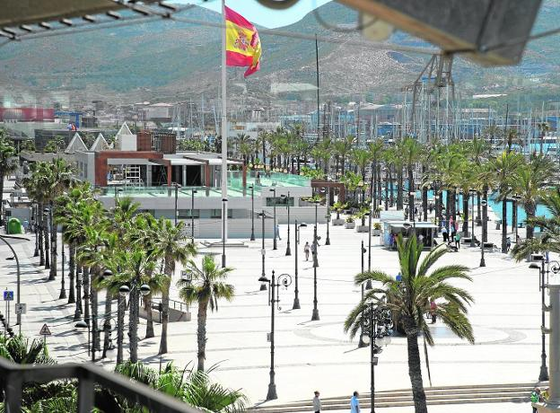

Descripcion
Otra de las mejores cosas que hacer en Cartagena es pasear por la zona del puerto y visitar alguno de sus museos como el reconocido Museo Nacional de Arqueología Subacuática (ARQUA). En este gran espacio se estudia, valora, investiga, conserva y difunde el extenso Patrimonio Cultural Subacuático español como el famoso y recuperado «tesoro del Odyssey», una colección de más de 570.000 monedas de oro y plata pertenecientes a la fragata Nuestra Señora de las Mercedes, hundida en 1804. Al salir del museo puedes seguir con el tranquilo paseo bordeando el puerto y observando diferentes esculturas como el Zulo, que homenajea a las victimas del terrorismo, La Cola de Ballena y Los Cañones de la Dársena de Botes, hasta llegar a la Puerta del Arsenal, un astillero y base naval.
